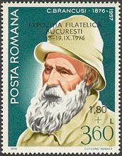
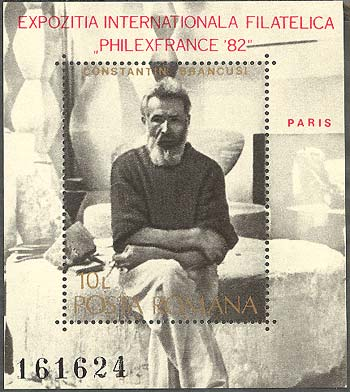
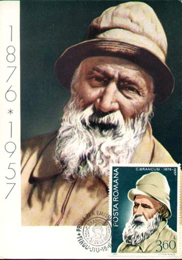

| Constantin Brancusi |
The Artist, on Stamps
Constantin Brancusi (read Bryncushi, where "y" has no equivalent, being a sound typical for Slavic or Turk languages - a bit like the "o" in "somebody", and the "i" is very short; the accent is on "u") was born February 19, 1876, in Hobitza, Judet Gorj, Romania. In 1886 he abandons school and works as a shepherd. At that time he can neither read nor write. In 1894 he enters Craiova School of Crafts, where wood carving, joinery, foundry work and smiting, mechanics, and wheel making are taught. Later, in 1897 he goes to Vienna to work in a furniture factory.
In 1898 he enrolls at the Bucharest School of Fine Arts to study sculpture, where he receives three years later honorable mentions for aesthetics, history of art and perspective.
The year 1902 find him working as a carpenter near his native village. Romania being a heavily forested land, wood was in evidence everywhere for the construction of houses and furniture.

Two years later the travels to Budapest, Vienna, and Munich. Eager to continue his education in Paris, and being a fan of Rodin, Brancusi arrived there in 1904 and enrolled in the Ecole des Beaux-Arts in 1905. The following year, his sculpture was shown at the Salon d’Automne, where he had the privilege to meet his artistic idol, Auguste Rodin.
Soon after 1907, Brancusi’s mature period began. The sculptor had settled in Paris but throughout these years returned frequently to Bucharest and exhibited there almost every year. In Paris, his friends included such later renown artists as Marcel Duchamp, Fernand Léger, Henri Matisse, Amedeo Modigliani, and Henri Rousseau. In 1913, five of Brancusi’s sculptures were included in the Armory Show in New York. Alfred Stieglitz presented the first solo show of Brancusi’s work at his gallery “291,” New York, in 1914. Brancusi was never a member of any organized artistic movement, although he associated with Francis Picabia, Tristan Tzara, and many other Dadaists in the early 1920s. In 1921, he was honored with a special issue of The Little Review.

He traveled to the United States twice in 1926 to attend his solo shows at Wildenstein and at the Brummer Gallery in New York. The following year, a historic trial was initiated in the United States to determine whether Brancusi’s Bird in Space was liable for duty as a manufactured object or as a work of art. The court decided in 1928 that the sculpture was a work of art.
Brancusi traveled extensively in the 1930s, visiting India and Egypt as well as European countries. He was commissioned to create a war memorial for a park in Targu Jiu, Romania, in 1935, and designed a complex that included gates, tables, stools, and an Endless Column (the works were finished by 1939). After this year, Brancusi continued to work in Paris. His last sculpture, a plaster Grand Coq, was completed in 1949.

Because the Academy of the Romanian Popular Republic refused the testamentary order by whom Brancusi donated to it his works from his atelier in Impasse Ronsin, the 1st of August 1951 the sculptor gave up the Romanian citizenship and asked for the French one. He will get it a year later and will donate the atelier and his artistic patrimony to the French state. For this reason his atelier is today permanently exposed at the Modern Art Museum in Paris, France, and not in Romania, his country of birth, his country of dreams, his country of longing, his country of sorrow.

Constantin Brancusi died March 16, 1957, in Paris, the city and the country that adopted him as one of his own.
It is to mention that till his death, Brancusi was totally ignored in Romanian's communist press and educational system. His death, as in other similar cases (see Enescu), but also his growing popularity, washed off his pretended "sins" against the communist government of that time, and forced it to steadily reintroduce Brancusi's name in the culture of the country where he was born.
Please point on stamps with the mouse for more information.

| Published:
05/18/2002.
Revised: 17/06/2010 . Copyright © 2002 - 2010 by Victor Manta, Switzerland. All rights reserved worldwide. |